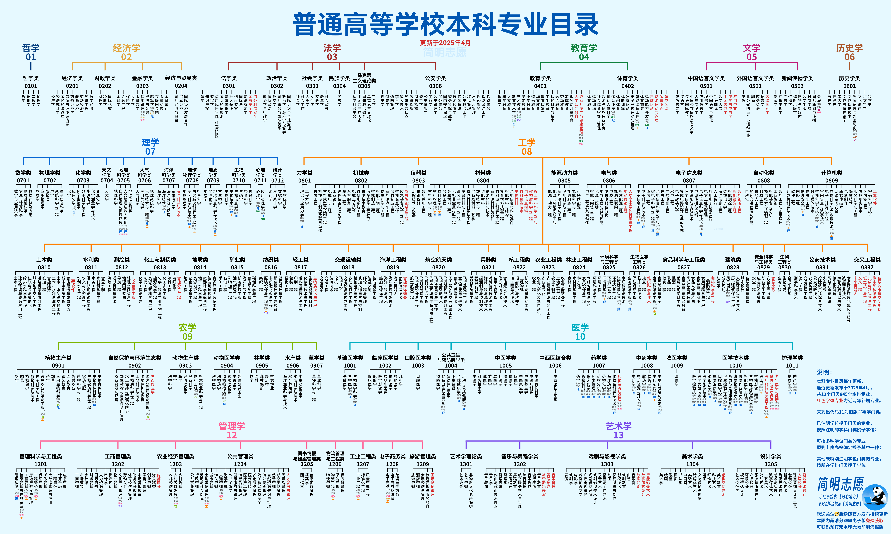
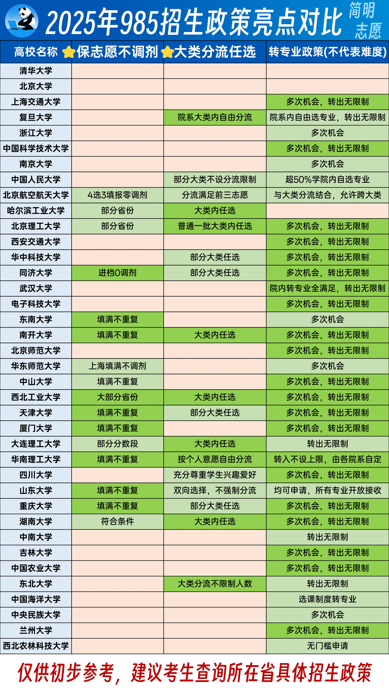
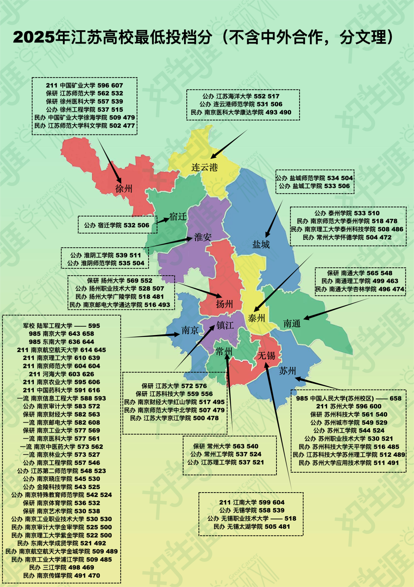
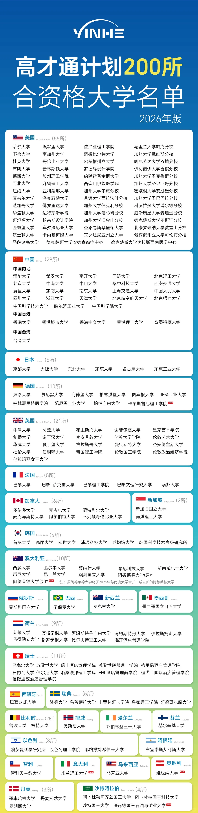

升学规划 · 资料导航
把散落的政策、院校、专业与就业资料，整理成一条可以顺着走的决策路径。先明确问题，再打开对应资料。
五步决策法
每一步只回答一个核心问题，减少信息过载。
兴趣、能力、城市、费用、体制路径与家庭边界。
从学科门类到课程、就业，再看选科与身体限制。
平台层次、优势学科、转专业、中外合作与特殊招生。
结合招生计划、专业组、投档分与冲稳保梯度。
逐项核对章程、单科、体检、学费和培养校区。
四张图，建立全局感
点击图片可放大；图中结论仅作线索，最终以当年官方政策为准。




来源索引
0 项资料 · 原始文件保留，便于回到出处复核。
可滚动查看原图细节；内容仅作初步参考。